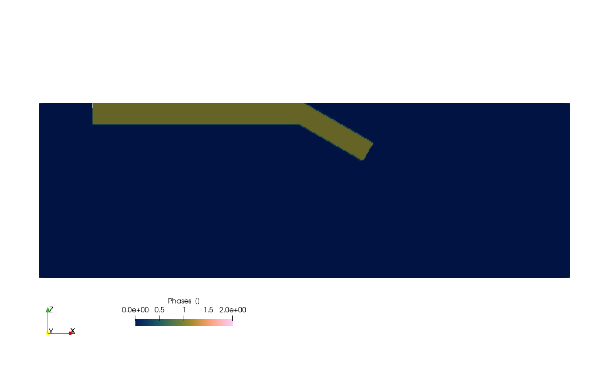
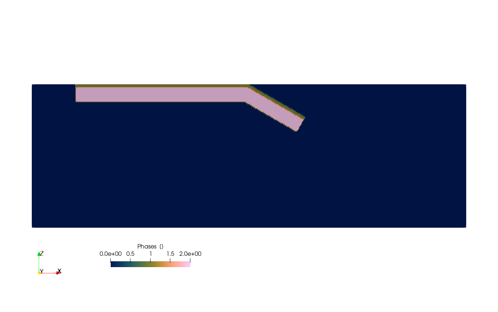
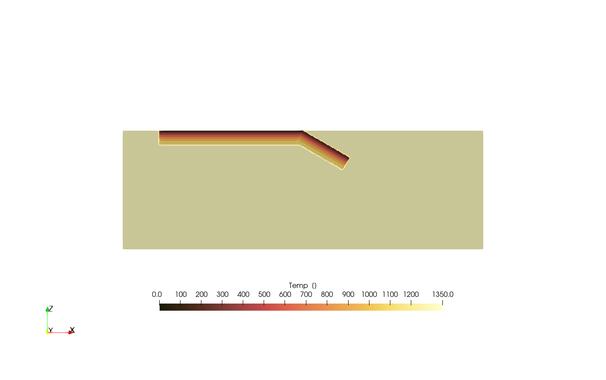
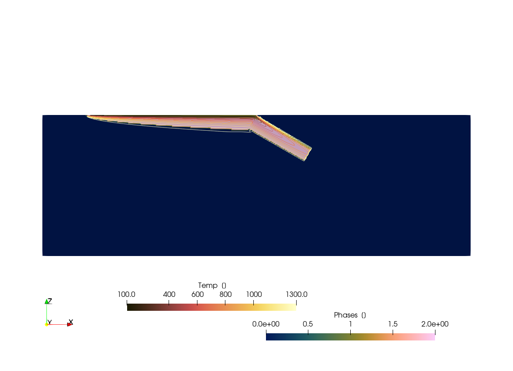
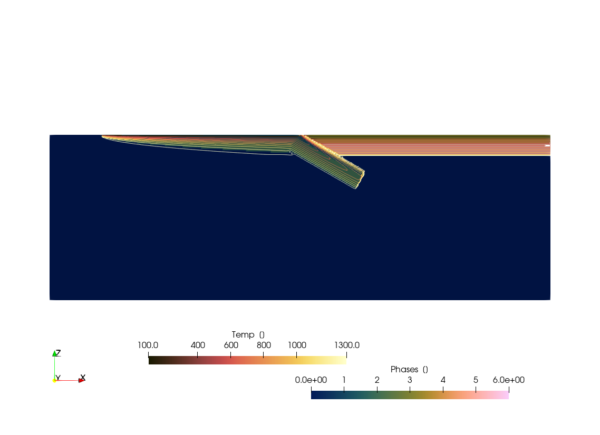
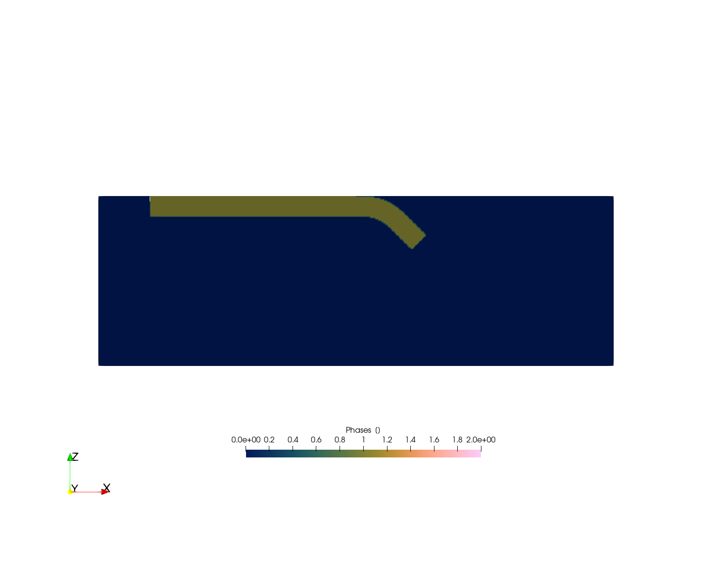
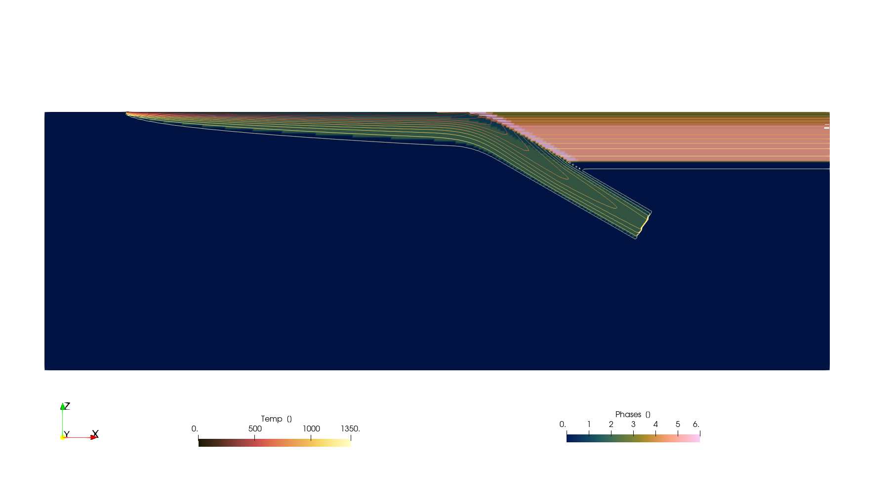

Creating 2D numerical model setups
Aim
The aim of this tutorial is to show you how to create 2D numerical model setups that can be used as initial setups for other codes.
2D Subduction setup
Lets start with creating a 2D model setup in Cartesian coordinates, which uses the CartData data structure
using GeophysicalModelGenerator
nx,nz = 512,128
x = range(-1000,1000, nx);
z = range(-660,0, nz);
Grid2D = CartData(xyz_grid(x,0,z))CartData
size : (512, 1, 128)
x ϵ [ -1000.0 : 1000.0]
y ϵ [ 0.0 : 0.0]
z ϵ [ -660.0 : 0.0]
fields : (:Z,)
Now we create an integer array that will hold the Phases information (which usually refers to the material or rock type in the simulation)
Phases = zeros(Int64, nx, 1, nz);In many (geodynamic) models, one also has to define the temperature, so lets initiate it
Temp = fill(1350.0, nx, 1, nz);Mechanical setup
We will start with a simple subduction setup, which consists of a horizontal part:
add_box!(Phases, Temp, Grid2D; xlim=(-800.0,0.0), zlim=(-80.0, 0.0), phase = ConstantPhase(1));And with the inclined part:
add_box!(Phases, Temp, Grid2D; xlim=(0.0,300.0), zlim=(-80.0, 0.0), phase = ConstantPhase(1), DipAngle=30);Add them to the CartData dataset:
Grid2D = addfield(Grid2D,(;Phases, Temp))CartData
size : (512, 1, 128)
x ϵ [ -1000.0 : 1000.0]
y ϵ [ 0.0 : 0.0]
z ϵ [ -660.0 : 0.0]
fields : (:Z, :Phases, :Temp)
Which looks like
write_paraview(Grid2D,"Grid2D_SubductionMechanical");Saved file: Grid2D_SubductionMechanical.vts

Add lithospheric layers
In many geodynamic models, the lithosphere consists of a crust and mantle (or upper crust, lower crust and mantle lithosphere). We can use the function LithosphericPhases for this, which is a simple way to set a lithospheric layering. The layering here is defined by the Layers and Phases arguments, where Layers is a vector of the thickness of each of the layers (counting from the top) and Phases is a vector of the phase numbers for each layer.
lith = LithosphericPhases(Layers=[15 55], Phases=[1 2])LithosphericPhases([15 55], [1 2], nothing)and set the slab again:
add_box!(Phases, Temp, Grid2D; xlim=(-800.0,0.0), zlim=(-80.0, 0.0), phase = lith);
add_box!(Phases, Temp, Grid2D; xlim=(0.0,300.0), zlim=(-80.0, 0.0), phase = lith, DipAngle=30);Which looks like:
Grid2D = addfield(Grid2D,(;Phases, Temp))
write_paraview(Grid2D,"Grid2D_SubductionMechanicalLayered");Saved file: Grid2D_SubductionMechanicalLayered.vts

Add halfspace cooling thermal structure
So far, we only created the mechanical structure but not the thermal one. We can do that by specifying a thermal structure. For example, we can use the half-space cooling model:
therm = HalfspaceCoolingTemp(Age=40)
add_box!(Phases, Temp, Grid2D; xlim=(-800.0,0.0), zlim=(-80.0, 0.0), phase = lith, T=therm);
add_box!(Phases, Temp, Grid2D; xlim=(0.0,300.0), zlim=(-80.0, 0.0), phase = lith, T = therm, DipAngle=30);Which looks like:
Grid2D = addfield(Grid2D,(;Phases, Temp))
write_paraview(Grid2D,"Grid2D_SubductionHalfspaceCooling");Saved file: Grid2D_SubductionHalfspaceCooling.vts

Note that you can specify other 1D thermal profiles, such as
ConstantTempLinearTempHalfspaceCoolingTempLithosphericTemp- which takes radioactive heating into accountSpreadingRateTemp- which assumes that the plate moved away from a ridge and the thermal age increased accordinglyMcKenzie_subducting_slab- temperature of a slab that is heated by surrounding mantle
You can also average 1D profiles:
LinearWeightedTemperature- Average 2 1D profiles along a distance
Add a ridge
Let's specify an oceanic thermal profile with a mid oceanic ridge at the left. For this, we use the SpreadingRateTemp function, and specify a spreading velocity (note that this simply relates to the thermal structure and does not have to be the same as the subduction velocity you obtain in your geodynamic simulation).
lith = LithosphericPhases(Layers=[15 55], Phases=[1 2], Tlab=1250)
add_box!(Phases, Temp, Grid2D; xlim=(-800.0,0.0), zlim=(-80.0, 0.0), phase = lith, T=SpreadingRateTemp(SpreadingVel=3));For the subduction we use a thermal structure of a slab heated by hot asthenosphere
add_box!(Phases, Temp, Grid2D; xlim=(0.0,300.0), zlim=(-80.0, 0.0), phase = lith, T = McKenzie_subducting_slab(Tsurface=0,v_cm_yr=3), DipAngle=30);We can set the mantle lithosphere that is hotter > 1250 C to mantle:
ind = findall(Temp .> 1250 .&& Phases .==2);
Phases[ind] .= 0;
Grid2D = addfield(Grid2D,(;Phases, Temp))
write_paraview(Grid2D,"Grid2D_SubductionRidge");Saved file: Grid2D_SubductionRidge.vts

Overriding slab and weak layer
Ok, lets add an overriding slab as well. For this, we use the add_layer! function
lith = LithosphericPhases(Layers=[15 20 55], Phases=[3 4 5], Tlab=1250)
add_box!(Phases, Temp, Grid2D; xlim=(0.0,1000.0), zlim=(-80.0, 0.0), phase = lith, T=HalfspaceCoolingTemp(Age=80));The oceanic plate is as before
lith = LithosphericPhases(Layers=[15 55], Phases=[1 2], Tlab=1250)
add_box!(Phases, Temp, Grid2D; xlim=(-800.0,0.0), zlim=(-80.0, 0.0), phase = lith, T=SpreadingRateTemp(SpreadingVel=3));For the inclined part, we set a layer above the slab (the "weak" layer to facilitate subduction initiation )
lith = LithosphericPhases(Layers=[10 15 55], Phases=[6 1 2], Tlab=1250)
add_box!(Phases, Temp, Grid2D; xlim=(0.0,300.0), zlim=(-80.0, 10.0), phase = lith, T = McKenzie_subducting_slab(Tsurface=0,v_cm_yr=3), DipAngle=30);Lithosphere-asthenosphere boundary:
ind = findall(Temp .> 1250 .&& Phases .==2);
Phases[ind] .= 0;
Grid2D = addfield(Grid2D,(;Phases, Temp))
write_paraview(Grid2D,"Grid2D_SubductionOverriding");Saved file: Grid2D_SubductionOverriding.vts

Curved slab - mechanics
So far, the subducting part of the slab was always straight. We can also create a curved slab by using the add_slab! function. This uses a parametric representation of the slab and is a bit more involved than the add_box! function.
We start with the horizontal part:
nx,nz = 512,128
x = range(-1000,1000, nx);
z = range(-660,0, nz);
Grid2D = CartData(xyz_grid(x,0,z))
Phases = zeros(Int64, nx, 1, nz);
Temp = fill(1350.0, nx, 1, nz);
add_box!(Phases, Temp, Grid2D; xlim=(-800.0,0.0), zlim=(-80.0, 0.0), phase = ConstantPhase(1));Next, we should define a Trench structure, which contains info about the trench which goes in 3D from Start - End coordinates (x,y)-coordinates respectively. As we are dealing with a 2D model, we set the y-coordinates to -100.0 and 100.0 respectively. Other parameters to be specified are Thickness (Slab thickness), θ_max (maximum slab dip angle), Length (length of slab), and Lb length of bending zoneof slab
trench = Trench(Start=(0.0,-100.0), End=(0.0,100.0), Thickness=80.0, θ_max=45.0, Length=300, Lb=200, direction=-1.0);
add_slab!(Phases, Temp, Grid2D, trench, phase = ConstantPhase(1));Add them to the CartData dataset:
Grid2D = addfield(Grid2D,(;Phases, Temp))
write_paraview(Grid2D,"Grid2D_SubductionCurvedMechanical");Saved file: Grid2D_SubductionCurvedMechanical.vts

Curved slab - thermo-mechanics
The add_slab! function has a few more interesting options. You can, for example, specify a weak decoupling layer above the slab which adds a weak layer between the subducting and overriding slab. You can also indicate a thermal structure for the slab, which can increase from a halfspace cooling model (of the horizontal part of the slab) to a slab that is heated by the surrounding mantle below a decouping depth d_decoupling.
Our starting basis is the example above with ridge and overriding slab
nx,nz = 512,128
x = range(-1000,1000, nx);
z = range(-660,0, nz);
Grid2D = CartData(xyz_grid(x,0,z))
Phases = zeros(Int64, nx, 1, nz);
Temp = fill(1350.0, nx, 1, nz);
lith = LithosphericPhases(Layers=[15 20 55], Phases=[3 4 5], Tlab=1250)LithosphericPhases([15 20 55], [3 4 5], 1250)Lets start with defining the horizontal part of the overriding plate. Note that we define this twice with different thickness to deal with the bending subduction area:
add_box!(Phases, Temp, Grid2D; xlim=(200.0,1000.0), zlim=(-150.0, 0.0), phase = lith, T=HalfspaceCoolingTemp(Age=80));
add_box!(Phases, Temp, Grid2D; xlim=(0.0,200.0), zlim=(-50.0, 0.0), phase = lith, T=HalfspaceCoolingTemp(Age=80));The horizontal part of the oceanic plate is as before:
v_spread_cm_yr = 3 #spreading velocity
lith = LithosphericPhases(Layers=[15 55], Phases=[1 2], Tlab=1250)
add_box!(Phases, Temp, Grid2D; xlim=(-800.0,0.0), zlim=(-150.0, 0.0), phase = lith, T=SpreadingRateTemp(SpreadingVel=v_spread_cm_yr));Yet, now we add a trench as well. The starting thermal age at the trench is that of the horizontal part of the oceanic plate:
AgeTrench_Myrs = 800e3/(v_spread_cm_yr/1e2)/1e6 #plate age @ trench26.666666666666668We want to add a smooth transition from a halfspace cooling 1D thermal profile to a slab that is heated by the surrounding mantle below a decoupling depth d_decoupling.
T_slab = LinearWeightedTemperature( F1=HalfspaceCoolingTemp(Age=AgeTrench_Myrs), F2=McKenzie_subducting_slab(Tsurface=0,v_cm_yr=v_spread_cm_yr, Adiabat = 0.0))LinearWeightedTemperature(0.0, 1.0, 100.0, :X, HalfspaceCoolingTemp(0, 1350, 26.666666666666668, 0), McKenzie_subducting_slab(0.0, 1350.0, 0.0, 3.0, 1.0e-6, 36))in this case, we have a more reasonable slab thickness:
trench = Trench(Start=(0.0,-100.0), End=(0.0,100.0), Thickness=90.0, θ_max=30.0, Length=600, Lb=200,
WeakzoneThickness=15, WeakzonePhase=6, d_decoupling=125);
add_slab!(Phases, Temp, Grid2D, trench, phase = lith, T=T_slab);Lithosphere-asthenosphere boundary:
ind = findall(Temp .> 1250 .&& (Phases.==2 .|| Phases.==5));
Phases[ind] .= 0;
Grid2D = addfield(Grid2D,(;Phases, Temp))
write_paraview(Grid2D,"Grid2D_SubductionCurvedOverriding");Saved file: Grid2D_SubductionCurvedOverriding.vts
The result is a smooth transition in thermal structure around the subduction zone: 
Other geometries
We have a number of other functions to help create a geometry, specifically:
AddLayer!AddSphere!AddEllipsoid!AddCylinder!
The help functions are quite self-explanatory, so we won't show it in detail here. If you have a topography surface or any other horizontal surface, you can surface with the Cartesian grid with above_surface or below_surface.
Also, if you wish to take a seismic tomography as inspiration to set a slab geometry, you can interpolate it to a CartGrid with the same dimensions and use that with the julia findall function.
This page was generated using Literate.jl.